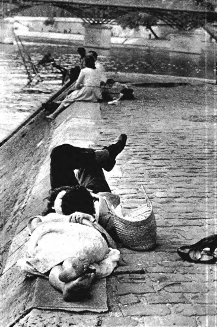
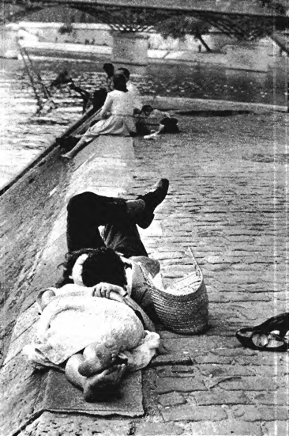
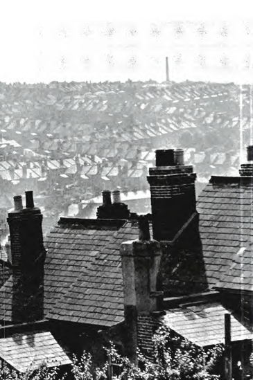
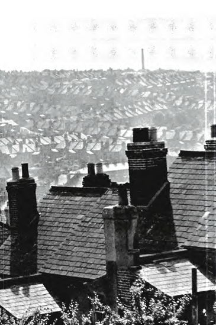
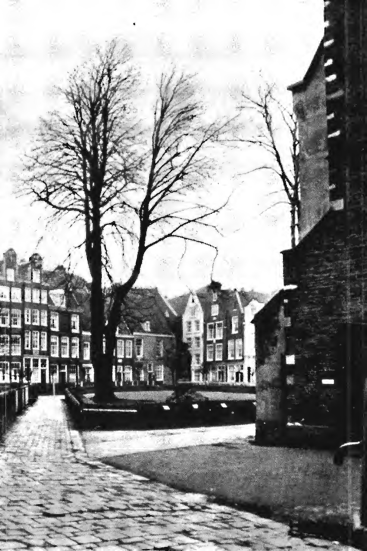
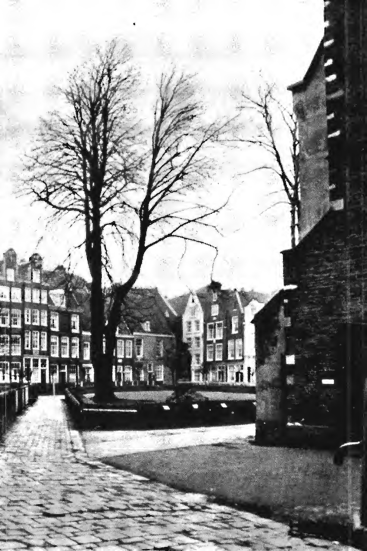

There is one timeless way of building.
It is thousands of years old, and the same today as it has always been.
The great traditional buildings of the past, the villages and tents and temples in which man feels at home, have always been made by people who were very close to the center of this way. It is not possible to make great buildings, or great towns, beautiful places, places where you feel yourself, places where you feel alive, except by following this way. And, as you will see, this way will lead anyone who looks for it to buildings which are themselves as ancient in their form, as the trees and hills, and as our faces are.
It is a process through which the order of a building or a town grows out directly from the inner nature of the people, and the animals, and plants, and matter which are in it.
It is a process which allows the life inside a person, or a family, or a town, to flourish, openly, in freedom, so vividly that it gives birth, of its own accord, to the natural order which is needed to sustain this life.
It is so powerful and fundamental that with its help you can make any building in the world as beautiful as any place that you have ever seen.
Once you understand this way, you will be able to make your room alive; you will be able to design a house together with your family; a garden for your children; places where you can work; beautiful terraces where you can sit and dream.
It is so powerful, that with its help hundreds of people together can create a town, which is alive and vibrant, peaceful and relaxed, a town as beautiful as any town in history.
Without the help of architects or planners, if you are working in the timeless way, a town will grow under your hands, as steady as the flowers in your garden.
And there is no other way in which a building or a town which lives can possibly be made.
This does not mean that all ways of making buildings are identical. It means that at the core of all successful acts of building and at the core of all successful processes of growth, even though there are a million different versions of these acts and processes, there is one fundamental invariant feature, which is responsible for their success. Although this way has taken on a thousand different forms at different times, in different places, still, there is an unavoidable, invariant core to all of them.
Look at the buildings in the photographs which start this chapter.
They are alive. They have that sleepy, awkward grace which comes from perfect ease.
And the Alhambra, some tiny gothic church, an old New England house, an Alpine hill village, an ancient Zen temple, a seat by a mountain stream, a courtyard filled with blue and yellow tiles among the earth. What is it they have in common? They are beautiful, ordered, harmonious—yes, all these things. But especially, and what strikes to the heart, they live.
Each one of us wants to be able to bring a building or part of a town to life like this.
It is a fundamental human instinct, as much a part of our desire as the desire for children. It is, quite simply, the desire to make a part of nature, to complete a world which is already made of mountains, streams, snowdrops, and stones, with something made by us, as much a part of nature, and a part of our immediate surroundings.
Each one of us has, somewhere in his heart the dream to make a living world a universe.
Those of us who have been trained as architects have this desire perhaps at the very center of our lives: that one day, somewhere, somehow, we shall build one building which is wonderful, beautiful, breathtaking, a place where people can walk and dream for centuries.
In some form, every person has some version of this dream: whoever you are, you may have the dream of one day building a most beautiful house for your family, a garden, a fountain, a fishpond, a big room with soft light, flowers outside and the smell of new grass.
In some less clear fashion, anyone who is concerned with towns has this same dream, perhaps, for an entire town.
And there is a way that a building or a town can actually be brought to life like this.
There is a definable sequence of activities which are at the heart of all acts of building, and it is possible to specify, precisely, under what conditions these activities will generate a building which is alive. All this can be made so explicit that anyone can do it.
And just so, the process by which a group of independent people make part of a town alive can equally be made precise. Again, there is a definable sequence of activities, more complex in this case, which are at the heart of all collective building processes, and it is possible to specify exactly when these processes will bring things to life. And, once again, these processes can be made so explicit, and so clear, that any group of people can make use of them.
This one way of building has always existed.
It is behind the building of traditional villages in Africa, and India, and Japan. It was behind the building of the great religious buildings: the mosques of Islam, the monasteries of the middle ages, and the temples of Japan. It was behind the building of the simple benches, and cloisters and arcades of English country towns; of the mountain huts of Norway and Austria; the roof tiles on the walls of castles and palaces; the bridges of the Italian middle ages; the cathedral of Pisa.
In an unconscious form, this way has been behind almost all ways of building for thousands of years.
But it has become possible to identify it, only now, by going to a level of analysis which is deep enough to show what is invariant in all the different versions of this way.
This hinges on a form of representation which reveals all possible construction processes, as versions of one deeper process.
First, we have a way of looking at the ultimate constituents of the environment: the ultimate "things" which a building or a town is made of. As we shall see, in chapters 4 and 5, every building, every town, is made of certain entities which I call patterns: and once we understand buildings in terms of their patterns, we have a way of looking at them, which makes all buildings, all parts of a town similar, all members of the same class of physical structures.
Second, we have a way of understanding the generative processes which give rise to these patterns: in short, the source from which the ultimate constituents of building come. As we shall see in chapters 10, 11, and 12, these patterns always come from certain combinatory processes, which are different in the specific patterns which they generate, but always similar in their overall structure, and in the way they work. They are essentially like languages. And again, in terms of these pattern languages, all the different ways of building, although different in detail, become similar in general outline.
At this level of analysis, we can compare many different building processes.
Then, once we see their differences clearly, it becomes possible to define the difference between those processes which make buildings live, and those which make them dead.
And it turns out that, invariant, behind all processes which allow us to make buildings live, there is a single common process.
This single process is operational and precise. It is not merely a vague idea, or a class of processes which we can understand: it is concrete enough and specific enough, so that it functions practically. It gives us the power to make towns and buildings live, as concretely as a match gives us the power to make a flame. It is a method or a discipline, which teaches us precisely what we have to do to make our buildings live.
But though this method is precise, it cannot be used mechanically.
The fact is, that even when we have seen deep into the processes by which it is possible to make a building or a town alive, in the end, it turns out that this knowledge only brings us back to that part of ourselves which is forgotten.
Although the process is precise, and can be defined in exact scientific terms, finally it becomes valuable, not so much because it shows us things which we don't know, but instead, because it shows us what we know already, only daren't admit because it seems so childish, and so primitive.
Indeed it turns out, in the end, that what this method does is simply free us from all method.
The more we learn to use this method, the more we find that what it does is not so much to teach us processes we did not know before, but rather opens up a process in us, which was part of us already.
We find out that we already know how to make buildings live, but that the power has been frozen in us: that we have it, but are afraid to use it: that we are crippled by our fears; and crippled by the methods and the images which we use to overcome these fears.
And what happens finally, is that we learn to overcome our fears, and reach that portion of our selves which knows exactly how to make a building live, instinctively. But we learn too, that this capacity in us is not accessible, until we first go through the discipline which teaches us to let go of our fears.
And that is why the timeless way is, in the end, a timeless one.
It is not an external method, which can be imposed on things. It is instead a process which lies deep in us: and only needs to be released.
The power to make buildings beautiful lies in each of us already.
It is a core so simple, and so deep, that we are born with it. This is no metaphor. I mean it literally. Imagine the greatest possible beauty and harmony in the world—the most beautiful place that you have ever seen or dreamt of. You have the power to create it, at this very moment, just as you are.
And this power we have is so firmly rooted and coherent in every one of us that once it is liberated, it will allow us, by our individual, unconnected acts, to make a town, without the slightest need for plans, because, like every living process, it is a process which builds order out of nothing.
But as things are, we have so far beset ourselves with rules, and concepts, and ideas of what must be done to make a building or a town alive, that we have become afraid of what will happen naturally, and convinced that we must work within a "system" and with "methods" since without them our surroundings will come tumbling down in chaos.
We are afraid, perhaps, that without images and methods, chaos will break loose; worse still, that unless we use images of some kind, ourselves, our own creation will itself be chaos. And why are we afraid of that? Is it because people will laugh at us, if we make chaos? Or is it, perhaps, that we are most afraid of all that if we do make chaos, when we hope to create art, we will ourselves be chaos, hollow, nothing?
This is why it is so easy for others to play on our fears. They can persuade us that we must have more method, and more system, because we are afraid of our own chaos. Without method and more method, we are afraid the chaos which is in us will reveal itself. And yet these methods only make things worse.
The thoughts and fears which feed these methods are illusions.
It is the fears which these illusions have created in us, that make places which are dead and lifeless and artificial. And—greatest irony of all—it is the very methods we invent to free us from our fears which are themselves the chains whose grip on us creates our difficulties.
For the fact is, that this seeming chaos which is in us is a rich, rolling, swelling, dying, lilting, singing, laughing, shouting, crying, sleeping order. If we will only let this order guide our acts of building, the buildings that we make, the towns we help to make, will be the forests and the meadows of the human heart.
To purge ourselves of these illusions, to become free of all the artificial images of order which distort the nature that is in us, we must first learn a discipline which teaches us the true relationship between ourselves and our surroundings.
Then, once this discipline has done its work, and pricked the bubbles of illusion which we cling to now, we will be ready to give up the discipline, and act as nature does.
This is the timeless way of building: learning the discipline—and shedding it.


 

 

 
